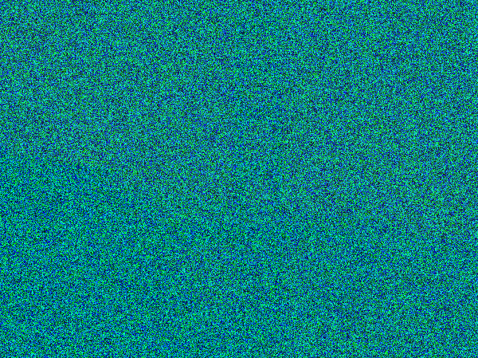

This is a short section to look at type of puzzle built out of image manipulation code.
Code To Fix the Pixels
There is an image of some unknown puzzle object
Red/green/blue values have been distorted, hiding the real image
Write code to fix the pixels
Recover the original image to solve the puzzle
Gold Puzzle
Here we have the "gold" puzzle image -- fix it to see the real image

Gold puzzle parameters:
The green and blue values are all just random values in the range 0..255 ("snow")
The data of the real image is exclusively in the red values
In addition, the red values have all been divided by 10 (dark)
The green/blue snow is obscuring the real image
Write code to recover the real image
Solution code:
// Strategy: zero out blue and green as they
// are just garbage data.
// Then scale red up by 10x to see the real
// image in red.
// your code here
pixel.setGreen(0);
pixel.setBlue(0);
pixel.setRed(pixel.getRed() * 10);
Seeing Red
In this case, our solution shows the image, but it's all in red. What we have here is basically a black-and-white image, but it is shown in the black-red range, rather than the usual black-white. For this section, we'll say that's good enough. We'll see how to fix the red image so it looks like a proper black-and-white image in a later section.